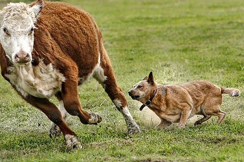

Australian Cattle Dog Breed Temperament
The Australian Cattle Dog (ACD) is renowned for its unique and multifaceted temperament, a blend of traits that make it a highly valued working dog and a devoted companion. Understanding their temperament is crucial for anyone considering adding an ACD to their family.
The Australian Cattle Dog's temperament, while challenging at times, is also incredibly rewarding. Their intelligence, loyalty, and work ethic make them exceptional companions for those who understand and appreciate their unique needs. With proper training, socialization, and care, ACDs can thrive as beloved family members and active partners in various activities.